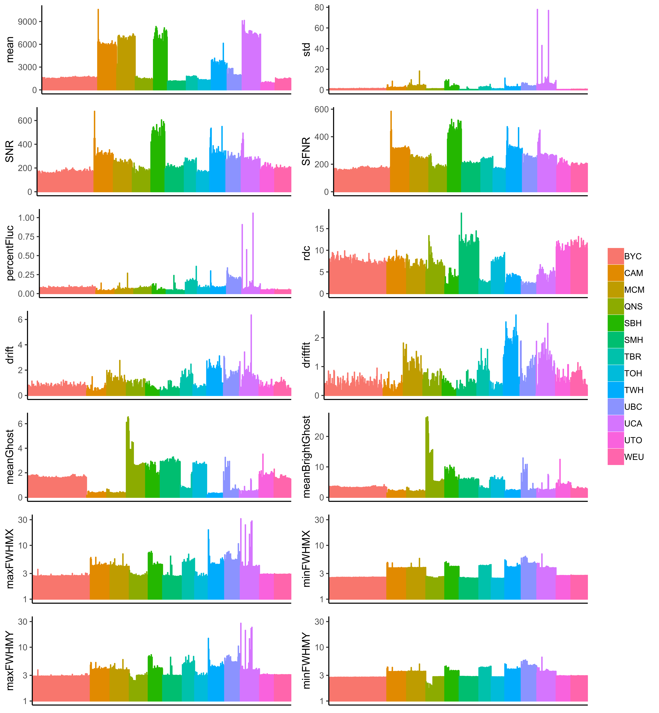

Resting-state fMRI quality assurance

This page contains interactive figures identified by Interactive. The interative figures allow zooming, data subsetting, and point lookup.
fBIRN QA parameters
The fBIRN QA pipeline was employed to calculate QA parameters for each imaging session [Friedman and Glover, 2006]. The following figure shows fourteen QA parameters are plotted for all sites:

Figure 1 - fBirn QA values for the 13 participating site. Each bar corresponds to an imaging session. Sessions are ordered chronologically for each site. Note that FWHM values are plotted in mm on log scales.
Characterization of variance
Principal component analysis
Principal component analysis (PCA) can reveal the variance in the QA variables within one imaging site as well as the variance between different sites. The following interactive dashboard shows the PCA of the fBIRN QA variables:
 Interactive Figure 2 - Principal component analysis (PCA) of the fBIRN QA variables. Shown is the scatter plot of the first two principal components (PC1 and PC2) of the fBIRN QA variables for all the imaging sessions. Each imaging session is colour-coded by scan site and shape-coded by scanner manufacturer. The imaging sessions within each site are connected in temporal order of acquisition. The ellipses show 95% normal probabilities. The original fBIRN QA variables are also plotted using red arrows on the PCA plane with the lengths proportional to the variable loadings.
Interactive Figure 2 - Principal component analysis (PCA) of the fBIRN QA variables. Shown is the scatter plot of the first two principal components (PC1 and PC2) of the fBIRN QA variables for all the imaging sessions. Each imaging session is colour-coded by scan site and shape-coded by scanner manufacturer. The imaging sessions within each site are connected in temporal order of acquisition. The ellipses show 95% normal probabilities. The original fBIRN QA variables are also plotted using red arrows on the PCA plane with the lengths proportional to the variable loadings.
Between-manufacturer variance
We noticed a substantial between-manufacturer variance. For instance, GE scanners are mostly in the first quadrant (top right quadrant), while Siemens scanners are located in the third (bottom left) and Philips scanners in the fourth (bottom right) quadrants on the PCA plane. There is moreover substantial differences in the variance between different manufacturers with Siemens having the smallest within manufacturer variance and Philips having the largest within manufacturer variance.
Anomalous sessions
In Figure 2 the imaging sessions within each site are connected in temporal order of acquisition. We observed prominent anomalous sessions in a number of sites (most strikingly in UCA, TWH, SMH, UBC, and TBR).
Main drivers of variance
Figure 2 shows the original fBIRN QA variables on the PCA plane of the first two principal components. As expected, FWHM is one of the main factors driving the variance between the manufacturers [Friedman et al., 2006]. In particular, the minFWHM along with signal-to-noise measures drives the between-manufacturer difference between the GE/Philips (upper right) versus Siemens (lower left) clusters. Simultaneously, maxFWHM along with various measures of temporal noise (e.g., percentFluc), which are almost orthogonal to minFWHM, drive the outlying sessions.
Reducing the variance
We identified two main sources of variance:
(1) between-manufacturer variance, and
(2) anomalous scan sessions.
We moreover noted that these sources of variance are driven by different factors. In this section I describe how we can reduce the variance due to each source.
Spatial smoothing reduces between-manufacturer variance
If between manufacturer variance is driven by differences in FWHM, smoothing the images to the greatest mean FWHM of all sites should reduce the variance. Figure 3 shows the PCA of the fBIRN QA measures after spatial smoothing to 7 mm by AFNI’s 3dBlurToFWHM. Our data show that smoothing indeed reduces the between manufacturer variance as shown by the overlapping 95% normal ellipses corresponding to Siemens and GE and Philips scanners in Figure 3 (compare with Figure 2 where Siemens scanners are distinctly separated form GE and Philips scanners). Smoothing brings the minimum FWHM up to a common value for all the scanners. However, smoothing does not appear to remove and/or alleviate the outlying sessions, indicating that the outliers are potentially driven by factors other than differences in reconstruction resolution.
 Interactive Figure 3 - Principal component analysis (PCA) of the fBIRN QA variables after spatial smoothing. Shown is the scatter plot of the first two principal components (PC1 and PC2) of the fBIRN QA variables for all the imaging sessions. Each imaging session is colour-coded by scan site and shape-coded by scanner manufacturer. The imaging sessions within each site are connected in temporal order of acquisition. The ellipses show 95% normal probabilities. The original fBIRN QA variables are also plotted using red arrows on the PCA plane with the lengths proportional to the variable loadings.
Interactive Figure 3 - Principal component analysis (PCA) of the fBIRN QA variables after spatial smoothing. Shown is the scatter plot of the first two principal components (PC1 and PC2) of the fBIRN QA variables for all the imaging sessions. Each imaging session is colour-coded by scan site and shape-coded by scanner manufacturer. The imaging sessions within each site are connected in temporal order of acquisition. The ellipses show 95% normal probabilities. The original fBIRN QA variables are also plotted using red arrows on the PCA plane with the lengths proportional to the variable loadings.
Anomaly detection using autocorrelation function (ACF) analysis
Since FWHM appears to be a main factor driving the between-site variance as well as the anomalies, we looked at an independent slice-wise measure of resolution using autocorrelation function (ACF) analysis. This was motivated by two factors: (1) to provide an independent measure of FWHM, and (2) to calculate slice-wise measures of FWHM, as our primary investigation of the anomalous images hinted at possible slice effects.
The slice ACF measurements of FWHM reveal slice instabilities within the anomalous scan sessions, which can result in unexplained variance in the data. These instabilities can be detected using slice ACF measurements of FWHM and can, under certain circumstances, be controlled by preprocessing. When preprocessing is not effective in controlling these instabilities, the affected scan sessions can be detected using slice ACF FWHM values and excluded in subsequent analysis.
Figure 4 shows PCA analysis of the fBIRN QA after detecting and excluding the anomalies using the slice ACF FWHM values. Compare this figure with Figure 2, in which a number of anomalous scan sessions are present.
 Interactive Figure 4 - Principal component analysis (PCA) of the fBIRN QA variables after removal of the anomalous scan sessions within each site using slice ACF FWHM measurements. Shown is the scatter plot of the first two principal components (PC1 and PC2) of the fBIRN QA variables for all the imaging sessions. Each imaging session is colour-coded by scan site and shape-coded by scanner manufacturer. The imaging sessions within each site are connected in temporal order of acquisition. The ellipses show 95% normal probabilities. The original fBIRN QA variables are also plotted using red arrows on the PCA plane with the lengths proportional to the variable loadings.
Interactive Figure 4 - Principal component analysis (PCA) of the fBIRN QA variables after removal of the anomalous scan sessions within each site using slice ACF FWHM measurements. Shown is the scatter plot of the first two principal components (PC1 and PC2) of the fBIRN QA variables for all the imaging sessions. Each imaging session is colour-coded by scan site and shape-coded by scanner manufacturer. The imaging sessions within each site are connected in temporal order of acquisition. The ellipses show 95% normal probabilities. The original fBIRN QA variables are also plotted using red arrows on the PCA plane with the lengths proportional to the variable loadings.
References
Friedman L, Glover GH (2006): Report on a multicenter fMRI quality assurance protocol. J Magn Reson Imaging 23:827–839.
Friedman L, Glover GH, Krenz D, Magnotta V, FIRST BIRN (2006): Reducing inter-scanner variability of activation in a multicenter fMRI study: role of smoothness equalization. NeuroImage 32:1656–1668.